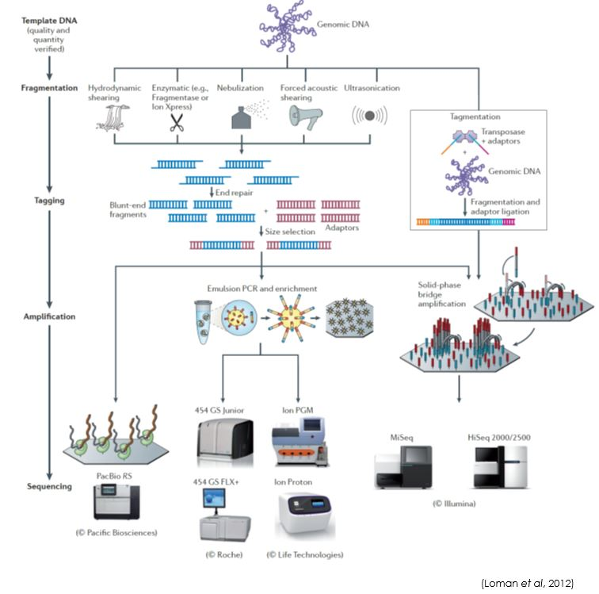
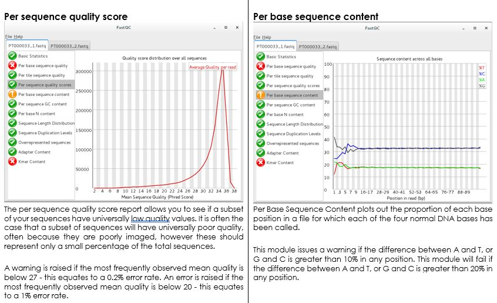
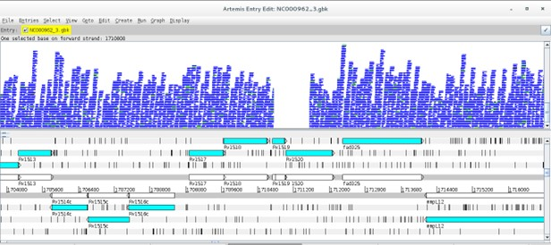

Click here to download the full course documentation conatining this tutorial.
A wide array of Next Generation Sequencing platforms are available nowadays and, depending on the platform, a single machine can output a total of 6000 Gbp in approximately 40h (the equivalent to approximately 937 human diploid genomes). Moreover, this data is produced in the form of short or long sequencing reads, also depending on the platform [1]. Given the ability of these machines to produce millions of reads from a single organism, the process of arranging these in an attempt to find overlaps and delineate contigs (genome assembly) is computationally demanding. Long read lengths are more adequate for genome assembly whereas the assembly of a genome using short read lengths may prove challenging particularly due to repetitive regions. This challenge can be partially overcomed using a reference genome for the organism being studied, in which the sequencing reads are aligned with this reference genome. This procedure is often called reference assembly or mapping. This designation contrasts with the procedure in which sequencing reads are assembly without a reference genome – de novo assembly. An important aspect for mapping that should be taken in account is that the reference genome should be a high quality well assembled genome [1].
This module will address the basic bioinformatic analytical steps underlying mapping/reference assembly of NGS data. We will mainly focus on the analysis of sequence data obtained from Illumina platforms, that presently dominates 80-90% of the market, sequenced in paired-end mode. What does “paired-end mode” mean? It is important to first start by understanding the process of Illumina “sequencing-by-synthesis” methodology: starting with genomic DNA, it is randomly sheared and an appropriate length is selected after fractioning by agarose gel electrophoresis, followed by adapter ligation and solid phase PCR amplification (bridge amplification) on a sequencing flow cell [1]. Afertwards, sequencing by synthesis is carried out using reversible fluorescently-labelled terminator nucleotides where each fragment is sequenced on both ends producing two mate reads for each fragment (hence, paired-end sequencing).
The ensuing computational or in silico analysis picks up from the FASTQ files produced after adapter removal. The two main approaches at this point are as mentioned, Mapping and De novo Assembly. In this module we will focus on Mapping sequence reads obtained from M. tuberculosis clinical isolates collected in Portugal. By mapping sequence reads to a reference genome it will enable the downstream identification of Single Nucleotide Polymorphisms (SNPs), insertions and deletions (indels) and copy number variants (CNVs) that exist between the two organisms. Comparative Genomics underpinned on mapping analysis is also possible if the reference sequence remains the same.
The general workflow for this analysis consists in mapping the reads against a reference sequence using a mapper/aligner software to produce a mapping file (SAM/BAM) that can be further analysed and sorted using programs such as Picard Tools/Genome Analysis Toolkit or Samtools. Afterwards, it is possible to visualize the alignments using appropriate software with graphical interface and perform additional downstream analysis such as variant calling.
First, let’s have a quick look at the FASTQ file format (Exercise 1).
Let’s have a look at the files made available for this course. Under the home directory there is a another directory called fastq_files.
Let´s access this folder: open up a terminal and type:
$ cd course_filesYou can list its contents by typing ls (list command) which should give you the list of files and sub-directories within. You’ll find a fasta file (NC000962_3.fasta) for the M. tuberculosis H37Rv reference genome (GenBank Acc. NC000962.3) and ten compressed fastq files for five different M. tuberculosis clinical isolates:
• PT000033: PT000033_1.fastq.gz and PT000033_2.fastq.gz
• PT000049: PT000049_1.fastq.gz and PT000049_2.fastq.gz
• PT000050: PT000050_1.fastq.gz and PT000050_2.fastq.gz
• PT000271: PT000271_1.fastq.gz and PT000271_2.fastq.gz
• PT000279: PT000279_1.fastq.gz and PT000279_2.fastq.gz
Some of the programs we will use ahead can deal directly with fastq compressed files but let us decompress the PT000033 files while keeping the compressed files unchanged:
$ gzip -dc PT000033_1.fastq.gz > PT000033_1.fastq $ gzip -dc PT000033_2.fastq.gz > PT000033_2.fastq # Next, let’s copy these to the Module1 directory so that these are available for the next parts but let's change first to the Module 1 directory: $ cd ../Module1 $ cp ../course_files/PT000033_*.fastq .
The -d option indicates that it is a decompressing operation and -c option redirects the output to the file we indicate after >.
$ more NC000962_3.fasta
Now let’s look at the file content and format. Let’s start by looking at the reference fasta file.
Now let us compare the FASTA format with the FASTQ format:
$ more PT000033_1.fastq
What are the differences?
The FASTQ format:

Let’s take a look at the beginning and end of the bottom sequence in the figure above. What are the Phred33 Q scores compared to the rest of the sequence?
How we deal with this problem will be topic of the next exercise: Read Quality Control!!
Before introducing sequencing reads into an analytical pipeline it is highly important to check the overall quality of the reads through the evaluation of the percentage of low quality bases, contamination or length. The impact of low quality or base calling errors can be minimised in downstream applications by applying some filters where low quality reads or bases are removed if these do not meet thresholds defined by the user [2, 3].
Let’s start by analysing the reads from the previous exercise (PT000033). These have been put in the Module1 directory. To assess the quality of these reads we will use a Java written software named FastQC that provides a user-friendly way to carry out some quality control checks on raw sequence data.
To start, double-click on the FastQC shortcut available on the desktop. This will open the FastQC graphical interface. Alternatively, you can start the FastQC from the command prompt by typing:
$ fastqc
Go to File>Open and then select the two reads for PT000033 strain present in the Module1 directory. This will start the analysis. After analysis is completed you can examine the data for each read file showing up on different tabs.
Go ahead and take a look at the different parameters that are evaluated. Normal QC tests will show up with a green tick, slightly abnormal with an exclamation mark in orange, and abnormal results with a cross highlighted in red. What problems seem to be affecting these reads?
Let’s have a look at the QC parameters:
Improving the quality of the read files is an essential step that prevents the emergence of errors in downstream steps such as erroneously mapped reads or incorrectly called variants [3]. We will be using a Java written command-line tool that is designed to trim and crop Illumina FASTQ files and can also be used to remove adapters: Trimmomatic [2]. This tool also has the advantage of parallelization across multiple cores thereby increasing its execution speed in multi-processor machines (multithreading). Trimmomatic can operate on Single-end and Paired-end mode. We will be using the paired-end mode where the software will keep the correspondence between read mates.
Learn more about Trimmomatic:
• Bolger, A. M., Lohse, M., & Usadel, B. (2014). Trimmomatic: A flexible trimmer for Illumina Sequence Data. Bioinformatics, btu170.
• http://www.usadellab.org/cms/?page=trimmomatic
The Trimmomatic options are:
• ILLUMINACLIP: Cut adapter and other illumina-specific sequences from the read.
• SLIDINGWINDOW: Perform a sliding window trimming, cutting once the average
quality within the window falls below a threshold.
• LEADING: Cut bases off the start of a read, if below a threshold quality
• TRAILING: Cut bases off the end of a read, if below a threshold quality
• CROP: Cut the read to a specified length
• HEADCROP: Cut the specified number of bases from the start of the read
• MINLEN: Drop the read if it is below a specified length
• TOPHRED33: Convert quality scores to Phred-33
• TOPHRED64: Convert quality scores to Phred-64
Let’s get started, from your home directory go to the Module1 directory:
$ cd Module1 ## Now let’s start trimming PT000033 reads: $ trimmomatic PE -phred33 PT000033_1.fastq PT000033_2.fastq PT000033_1_trimmed_paired.fastq PT000033_1_trimmed_unpaired.fastq PT000033_2_trimmed_paired.fastq PT000033_2_trimmed_unpaired.fastq LEADING:3 TRAILING:3 SLIDINGWINDOW:4:20 MINLEN:36
What files did the software generated? Rerun the FastQC analysis for the paired-end files (*_paired.fastq) and take a look…
Time to start mapping! To align sequence reads to a reference genome we must first choose one of the many short-read aligner software that are currently available. These softwares are based on alignment algorithms that can cope with the millions of reads produced for a single organism by NGS platforms and, are more efficient in doing this than traditional aligning algorithms. Different algorithms exist for this task as well as different software implementations [4, 5]. For a thorough review on mapping algorithms and sequence read alignment you can check the following articles:
• Mielczarek M, Szyda J. Review of alignment and SNP calling algorithms for next-generation sequencing data. J Appl Genet. 2016; 57: 71-79.
• Li H, Homer N. A survey of sequence alignment algorithms for next-generation sequencing. Brief Bioinform. 2010; 11: 473-483.
Most well-known aligners include MAQ, Bowtie, BWA, etc. The output of most of these aligners is a file containing the alignment in the SAM/BAM format which is the most widely used format to store NGS mapped reads [6]. We will look at this format ahead. In this course we will use one of the most popular aligners – Burrows-Wheeler Aligner (BWA) [7]. BWA comprehends different three alignment algorithms: BWA-backtrack (aln and sampe/samse); BWA-SV; and BWA-MEM. For 70bp or longer Illumina, 454, Ion Torrent and Sanger reads, assembly contigs and BAC sequences, BWA-MEM is usually the preferred algorithm. For short sequences, BWA-backtrack may be better. BWA-SW may have better sensitivity when alignment gaps are frequent.
In this exercise we will use the BWA-MEM algorithm. We will now map the reads from strain PT000033 to the M.tuberculosis H37Rv genome. Let’s start by open a terminal window and from your home directory go to Module1 directory:
$ cd Module1 ## First, we have to index the reference sequence (NC00962_3.fasta) to allow efficient access by BWA upon mapping: $ bwa index NC000962_3.fasta ## Next, we will map the trimmed paired reads obtained in the previous exercise. We can also map the unpaired reads but we would need to merge the resulting three SAM/BAM files. In this exercide we will continue with the paired reads only: $ bwa mem -R "@RG\tID:PT000033\tSM:PT000033\tPL:Illumina" -M NC000962_3.fasta PT000033_1_trimmed_paired.fastq PT000033_2_trimmed_paired.fastq > PT000033.sam ##The -R and -M option are included for compatibility with Picard tools and GATK during variant calling. Although we will not use these, the SAM file produced can be subsequently analysed by these programs if necessary. The -R option specifies the read group header line and the -M option is grants compatibility with Picard tools.
The commands above should have generated a SAM file. Let’s look at its content:
$ more PT000033.sam
This seems rather complex but it is in fact a flexible format to store the coordinates of mapped and unmapped reads, associated Phred33 Q scores and chromosome. See the figure below to have an idea of what it represents (the image below represents a single line):
You can also use the built-in word-count program in Linux to check the number of lines in this SAM file:
$ wc -l PT000033.sam
Now that we have a SAM file we can convert it to its compressed binary format (which cannot be read as a text file but can be read with Samtools view). We also need to sort the BAM file by coordinates to allow efficient access and analysis and index this BAM file. The BAM index file (*.bai) is required by some visualization and downstream analysis software, as it allows rapid access to the BAM file.
## We will again index the reference sequence, this time with Samtools: $ samtools faidx NC000962_3.fasta ## We can then convert the SAM file to a BAM file: $ samtools view -bt NC000962_3.fasta.fai PT000033.sam > PT000033.bam ## Sorting: $ samtools sort -o PT000033.sorted.bam PT000033.bam ## Finally, we will index the sorted bam file (if posteriorly you change the name of the BAM file it is necessary to re-index this same file): $ samtools index PT000033.sorted.bam
You can produce some basic mapping statistics by using samtools flagstat command:
$ samtools flagstat PT000033.sorted.bam ## This will output the result to standard output (screen), or you can alternatively save it in a new file (PT000033_stats.txt): $ samtools flagstat PT000033.sorted.bam > PT000033_stats.txt
At this point we have checked the quality of reads (QC), trimmed low-quality reads and bases and mapped the sequence reads to a reference genome. We can now proceed to variant calling but let’s first look visualize the mapped reads onto a reference chromosome.
There are several programs to visualize genomic data, including annotated genes and mapped reads: Artemis, Tablet, IGB, etc [8-10]. Artemis and Tablet are available in the Linux Operating System Image made available for this course. However, we will be using Artemis in this exercise. Artemis is a powerful visualization and annotation tool with multiple functionality, having the advantage of being a Java written platform and can therefore be used on Windows, MacOS or GNU/Linux platforms [9].
To use artemis we must first open a genome, this can be either in the format of a fasta file, such as the file containing the reference genome we used in the previous exercise or for example a GenBank file (*gb or *gbk). The latter has the advantage of containing the sequence data along with the annotation for genes and open reading frames (ORFs). It is also possible to open a FASTA file and subsequently read in entries from a GFF3 file (annotation). All these file types can be easily retrieved from GenBank (see send to file on: https://www.ncbi.nlm.nih.gov/nuccore/NC_000962; don’t forget to check the Show sequence on the Display options).
On the Module1 directory the NC000962_3.gbk file is available. Please open it with Artemis.
To start Artemis either double-click on the shortcut on the desktop or open up a terminal window and type:
$ art
This will open an Artemis window:
Go to File>Open… > then select the NC000962_3.gbk and click OPEN. You can skip the warnings.
A new window will open:
The Artemis window has three main views. The first contains the plus and minus DNA strands along with their respective three reading frames. You can see genes annotated on these reading frames. The middle view is similar but zooming at the nucleotide level along with respective amino acids at each reading frame. The bottom view shows each annotated feature, starting and ending genomic positions and, additional information on the gene function or similarity, etc., if available.
Before reading more data in, navigate around, you can use the horizontal scroll bar on the top view to move along the genome, and you can use the vertical scroll bar to zoom in and out. To move to regions more efficiently, click on Goto>Navigator… to open the navigator window. Try to search for a gene of your interest (e.g. rpsL). After selecting, note that you can view the gene in FASTA format by right-clicking on it and then View>Bases>Bases of Selection as FASTA. Similarly by doing the same thing but by starting with Create you can save the FASTA directly to a file of your choice.
You can also add additional plots by, e.g., going to Graphs>GC Content (%).
These are just some of the functionalities.
Tip: To select bases or amino acids inside a feature click the region of interest while pressing Alt.
Next, it is time to look at your alignment file. Go to File>Read BAM/VCF and open the sorted BAM file you created in the previous exercise for the PT000033 strain.
(Attention: if the BAM file is not indexed and the bai file is not in same directory Artemis won’t be able to open it)
Something like this should appear:
Now, there is a new view representing the mapping location of every successfully mapped read. Moreover, you can for example select any read right-click and then click the Show Details of the read. A new window will appear with data on the sequence read:
Does this information remind you of anything? Perhaps the data contained in the SAM file…
Another useful option is to look at coverage plots. Right click on the stacked view and select Views>Coverage. What happened?
Differences in coverage:
Let’s again select the Stack view from the Views>Coverage. Next, using the Navigator window let’s go the region around nucleotide 1710800. What is happening here?
Now go to the article by Gagneux et al 2006 entitled “Variable Host-Pathogen Compatibility” and check Supplementary Table 4?
What can you conclude from this?
What about Single Nucleotide Polymorphisms?
Another important aspect is to look for SNPs. Return to the stack view and to the beginning of the genome. Now on the stack view righ-click Show>SNP Marks. Each SNP is highlighted by a red marking on the respective read. Take a look at it. Why are there so many red markings? How to distinguish those from the real SNPs?
Note that real SNPs consistently show up in almost all reads, whereas sequencing errors appear dispersed.
The strain we have been analysing is available at CPLP-TB (http://cplp-tb.ff.ulisboa.pt). Go to CPLP-TB and find this specific strain. What is its resistance pattern? If you already went to CPLP-TB you can confirm that this strain is monorresistant to Isoniazid (INH). To uncover the molecular basis of resistance in this isolate we can start by looking at the main gene associated with INH resistance: katG. Using the Navigator go to the katG gene. How many real SNPs can you detect and which one is associated with resistance?
Now, isn’t there an easier way to detect and account for SNP variants? Yes: Variant Calling.
Different software packages are also available for variant calling. Three main programs are available: samtools/bcftools mpileup, GATK and FreeBayes [6, 11]. In this practical we will use samtools mpileup in combination with Bcftools for filtering variants. A good approach is also to use multiple callers and combining the data to produce more robust datasets. At this point, the parameters used by variant calling software play a crucial role in correct variant identification [3].
Open a terminal and type:
$ bcftools mpileup
The complete parameter listing for samtools mpilup should appear:
Traditionally, the samtools mpileup command would be used to generate VCF, BCF or pileup for one or multiple BAM files and the calling process would be completed by Bcftools [12]. More recently the mipelup function was transferred to bcftools to avoid incompatibility issued between samtools/bcftools version. It is still possible to use samtools in this way but we need to check for compatibility between versions. Therefore, we have to pipe (‘|’) the output from bcftools [or samtools] mpileup to bcftools call. On a terminal window, type:
$ bcftools call
… to list bcftools call parameters and options:
Let’s start the variant calling process, type the following commands in the Module1 directory:
$ bcftools mpileup -A -Q 23 -d 2000 -f NC000962_3.fasta PT000033.sorted.bam | bcftools call -O v -vm -o PT000033.raw.vcf ## Notice that you have set the -Q option to skip aligned bases with quality below 23 and set the maximum read depth to 2000. $ vcfutils.pl varFilter -d 10 PT000033.raw.vcf > PT000033.filt.vcf ## Here, we used the vcfutils.pl perl script from BCFtools to filter the raw vcf file with the -d option to set the minimum read depth of 10 to call a variant.
The PT000033.filt.vcf file contains the called SNPs and small INDELs. Large structural variants that are longer than the read length must be identified using other approaches and software. But let’s look at the VCF (Variant Call Format) format, type:
$ more PT000033.filt.vcf
The VCF file is composed of a number of header lines starting with the hash symbol (‘#’) containing metadata and other information, followed by 10 columns of data on called variants:

You can open the vcf file with any text editor or even import it into an Excel spreadsheet. You can right-click on the file and select Open with LibreOffice Calc and import it as a file containing fields separated by tabs.
We can also view the vcf file in Artemis, but first it is necessary to compress the vcf file and index with tabix (from BCFtools):
$ bgzip -c PT000033.filt.vcf > PT000033.filt.vcf.gz $ tabix -p vcf PT000033.filt.vcf.gz
Some software only read compressed vcf files indexed with tabix. Indexation with tabix produces an index file (*.tbi) that should be in the same directory as the compressed vcf file (*.vcf.gz).
To open the vcf file in Artemis repeat the steps from Exercise 5 and load the NC000962.gbk files and read-in the PT000033.sorted.bam file. Now, go again to File>Read BAM/VCF and select the compressed vcf file (PT000033.filt.vcf.gz). Another view should appear with vertical lines highlighting the variants on the VCF file. It is generally recommended not to consider variants with QUAL score below 30. Recall the Phred33 table in Exercise 1. What is the error probability of QUAL 30 score?
You can apply different sorts of filters by right-clicking on the VCF view and selecting Filters.
Inside Module1 directory, there is a sub-directory called vcfs. This directory contains additional VCF files for you to use. You can add these vcf files for comparison purposes. Right-click on the VCF view and select Add VCF …
[Alternatively, you can generate these VCF files yourself by repeating the steps from the different exercises in this module using the FASTQ files in the course_files directory, see Exercise 1].
The last, and optional, exercise of this module pertains the functional annotation of the VCF file. This last step is extremely useful as it will annotate each variant with the respective genetic impact. Not only we will be able to directly evaluate if each variant is synonymous or non-synonymous but it will be also possible to directly see the genetic mutation and affected gene.
We will use another Java written program – SnpEff - that requires some configuration that is ouside the scope of this module. However, the online documentation available at http://snpeff.sourceforge.net/SnpEff_manual.html is very comprehensive and contains detailed steps on how to download or build its database. SnpEff takes the uncompressed VCF file as input and generates another VCF file annotated with additional information in the INFO field (ANN) [13]. We can do this by typing:
$ snpEff -no-downstream -no-upstream -v -c ~/snpEffdata/snpeff.config NC000962_3 PT000033.filt.vcf > PT000033.ann.vcf ## With this command, we are specifying the path to SnpEff configuration file using the -c option; the -v option turns on the verbose mode; and the -no-downstream and -no-upstream options disable the annotation of downstream and upstream variants. We selected this option as otherwise the VCF file would be overpopulated with upstream and downstream modifier variants as genes in bacteria are very close to each other.
This VCF file can also be loaded in Artemis although it has to be compressed with bgzip and indexed with tabix.
Let us look at this new VCF file by typing:
$ more PT000033.ann.vcf
Can you spot the difference?
What about the INH-associated mutation that we detected visually? Can you find it using grep (sort of a Linux/GNU built-in Find):
$ grep "katG" PT000033.ann.vcf
Tip: Try to open this newly annotated VCF file on Excel/LibreOffice Calc. Down the line, parsing this format in R will allow you to carry out more advanced statistical analysis.
Optional:
You can also use BCFTOOLS to extract data to a more tabular format, you just need to specify the fields and become better acquainted with the VCF format and the syntax for the bcftools query command. Check this out:
$ bcftools query -f '%CHROM\t%POS\t%REF\t%ALT\t%QUAL\t%DP\t%ANN\n' PT000033.ann.vcf | sed 's/|/\t/g' # Notice that you just used sed (similar to find and replace) to replace the pipe symbols (|) from the ANN field with tabulations (\t).
1 Loman NJ, Constantinidou C, Chan JZ, et al. High-throughput bacterial genome sequencing: an embarrassment of choice, a world of opportunity. Nat Rev Microbiol. 2012; 10: 599-606.
2 Bolger AM, Lohse M, Usadel B. Trimmomatic: a flexible trimmer for Illumina sequence data. Bioinformatics. 2014; 30: 2114-2120.
3 Olson ND, Lund SP, Colman RE, et al. Best practices for evaluating single nucleotide variant calling methods for microbial genomics. Front Genet. 2015; 6: 235.
4 Li H, Homer N. A survey of sequence alignment algorithms for next-generation sequencing. Brief Bioinform. 2010; 11: 473-483.
5 Mielczarek M, Szyda J. Review of alignment and SNP calling algorithms for next-generation sequencing data. J Appl Genet. 2016; 57: 71-79.
6 Li H, Handsaker B, Wysoker A, et al. The Sequence Alignment/Map format and SAMtools. Bioinformatics. 2009; 25: 2078-2079.
7 Li H, Durbin R. Fast and accurate short read alignment with Burrows-Wheeler transform. Bioinformatics. 2009; 25: 1754-1760.
8 Milne I, Bayer M, Stephen G, Cardle L, Marshall D. Tablet: Visualizing Next-Generation Sequence Assemblies and Mappings. Methods Mol Biol. 2016; 1374: 253-268.
9 Carver T, Harris SR, Berriman M, Parkhill J, McQuillan JA. Artemis: an integrated platform for visualization and analysis of high-throughput sequence-based experimental data. Bioinformatics. 2012; 28: 464-469.
10 Freese NH, Norris DC, Loraine AE. Integrated genome browser: visual analytics platform for genomics. Bioinformatics. 2016; 32: 2089-2095.
11 McKenna A, Hanna M, Banks E, et al. The Genome Analysis Toolkit: a MapReduce framework for analyzing next-generation DNA sequencing data. Genome research. 2010; 20: 1297-1303.
12 Danecek P, Auton A, Abecasis G, et al. The variant call format and VCFtools. Bioinformatics. 2011; 27: 2156-2158.
13 Cingolani P, Platts A, Wang le L, et al. A program for annotating and predicting the effects of single nucleotide polymorphisms, SnpEff: SNPs in the genome of Drosophila melanogaster strain w1118; iso-2; iso-3. Fly (Austin). 2012; 6: 80-92.
<<-HOME